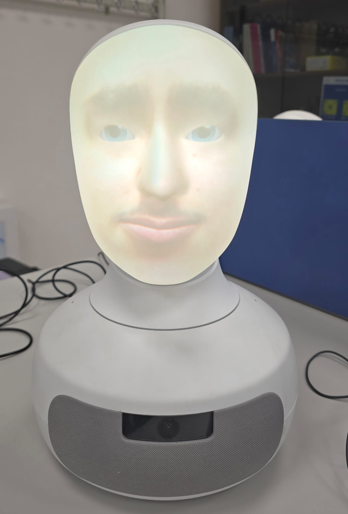

FurhatAPI
Progetto di tesi, Università di Salerno

Un sistema che permette al robot sociale Furhat di raccontare storie a piccoli gruppi di bambini con DSA, di capire come reagiscono e di rispondere in modo incoraggiante e mai giudicante.
- Architettura software multimodale in tempo reale, che unisce visione artificiale, riconoscimento vocale e linguaggio naturale.
- Face tracking con YuNet, riconoscimento delle espressioni con HSEmotion e riconoscimento persistente dei volti con ArcFace (ONNX).
- Sentiment analysis delle risposte verbali tramite OpenAI API, con cache per ridurre le chiamate sulle risposte semplici.
- Algoritmo decisionale basato sul «rinforzo collettivo», che valuta ogni partecipante incrociando volto e voce.